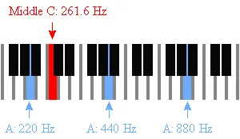

這是舊站 oliverflute.com 的文章，內容保留原貌，只修正排版。其中的考試日期、價錢和課程安排屬寫作當時的資料，請以現行公布為準。

學習樂器的同學，有沒有被朋友這樣問過：「你不是學樂器的嗎？怎麼唱歌吾岩KEY啊！？」
是的，很多人都會預設受過古典音樂樂器訓練的人，唱歌是絕不可能走調的。
所以大家記得這樣回答：「沒法，我學的是三角鐵……」（三角鐵：怪我咯？？）”
今天我們就來好好分析一下「走調」的學問，拯救唱K的尷尬時刻
首先必須明確一個概念，所謂唱歌不跑調，需要三大要素，三者屬於先後關係。
1. 能夠聽准
2. 能夠唱准
3. 正確的發聲方式，對歌曲的熟悉度，外界環境等外部因素
因為第三點不是天先的，所以我們就來重點講前兩點，尤其是第一點：
很多人會覺得如果聽都聽不准肯定沒救，其實Not Exactly！
可以自我測試一下，彈個音階，模仿唱幾遍，讓朋友幫忙聽（前提是這位朋友是要能聽准的……），只要你不是五音不全，每個音都是一個調，還自我感覺良好的話還是不難救的。如果基本都能在調上，但是有些音略不准（差距半音之內），恭喜你，經過後天的訓練，是完全有救的！

音準
音高實際上聲音頻率的體現，簡單來說，一個八度是12Hz，每個半音相差1Hz，由MiddleC上之A音符發出的頻率為440Hz（表示成A=440Hz，或是A440），通常被當作「標準音高」。
而量度音高的單位叫「音分」，每一個半音的音程等於100音分。我們說的音準，就是以音分為單位度量的。
音準感覺越好的人，同樣條件下可察覺的音分差越小
據一項研究表明，普通成人可以清楚分辨至少25音分的音高差（也就是12半音），而患有失樂感症的成人不能分辨小於100音分的音程差。當然音區、音色等外部因素會對具體結果有影響，這裏暫不討論這些。
在確認自己屬於「正常範圍」後，這時候古典音樂和樂器訓練的作用就來了。一般喜歡音樂的人聽音都不會太差。在經過後天大量的訓練後，你能夠分辨的音差能夠逐漸提高，聽得更準
不過據說學不同樂器，對音感的作用也是不同的。學弦樂的人一般音準感覺最好，因為弦樂主要靠耳朵抓調音，但管樂和鋼琴的人就沒那麼敏感了，可能是樂器本來就有鍵吧！我有一位朋友家中的鋼琴，音從南極走到了北極，但是彈奏者絲毫沒有察覺……而有些初學後過來找我學長笛的同學，那音準概念更是慘不忍睹……
可能有些人會說，這沒啥關係吧，有些人不學樂器的，唱歌也很好聽啊！音準感覺比我一個學了十幾年鋼琴的還好！！當然不能否認這世上確實有些天賦異稟的人，比如莫札特。
唱得准
在能夠無壓力聽准的情況下，有些人可能會有這樣的煩惱：我能夠聽出別人走調，但是自己唱歌卻怎麼唱不准，有時候即使聽出來了也沒法糾正到正確的音高上。
這個就涉及到聽覺系統的問題了，我們聽覺系統對外界聲音的感知和對自己發出的聲音的感知是不一樣的，所以有些歌手如果碰到音響系統（返聽）出問題唱歌就完全不在調上的，也是這個道理。
這個我個人覺得還是要靠多練了，除了唱功本身，還需要反復聽自己的錄音找問題糾正（不停Loop），漸漸就會有感覺，慢慢唱到自己認為“准”的水準。
看到最後，曾考樂器試的同學應該明白，為何需要考Aural時，考官需要你視唱了吧？